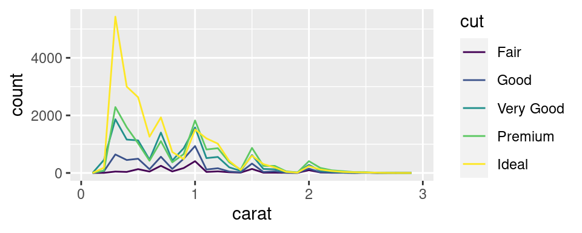
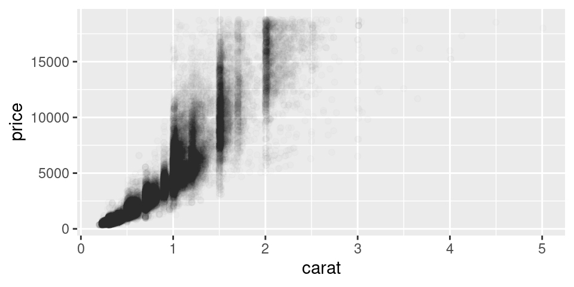

2.3 Importing, Quality Check and Cleansing
Actuarial Data Science Applications (ACTL4305/5305)
Reading List
- R for Data Science Online Book, Chapters 10, 11, 12, 7
- Applied predictive Modelling, 3.3 (only transformations to resolve outliers), 3.4
Tibbles
Tibbles
- We work with “tibbles” instead of R’s traditional data.frame in the
tidyverseenvironment. - The
tibblepackage, which provides opinionated data frames that make working in thetidyversea little easier. - Try
vignette("tibble")for more information.
Creating Tibbles
- Coerce a data frame to a tibble:
as_tibble() tibble()- Have non-syntactic names with backticks `
tribble(): transposed tibble
Example 1
Example 2
Pipe data using %>%
- Use
%>%to emphasise a sequence of actions, rather than the object that the actions are being performed on - pronounce
%>%when reading code “then” - No need to name things
%>%should always have a space before it, and should usually be followed by a new line.
Tibble v.s. data.frame
tibble()does much less:- it never changes the type of the inputs (e.g. it never converts strings to factors!),
- it never changes the names of variables, and
- it never creates row names.
- Printing
- Tibbles show only the first 10 rows
- each column reports its type
- use
print()to display more rows (n) and columns (width)
- Subsetting
- pull out a single variable:
$(extract by name) and[[ ]](extract by name or position) - in a pipe
%>%, use the special placeholder.
- pull out a single variable:
Examples
[1] 0.1997408 0.6022492 0.5121509 0.7503434 0.4194816[1] 0.1997408 0.6022492 0.5121509 0.7503434 0.4194816[1] 0.1997408 0.6022492 0.5121509 0.7503434 0.4194816[1] 0.1997408 0.6022492 0.5121509 0.7503434 0.4194816[1] 0.1997408 0.6022492 0.5121509 0.7503434 0.4194816Import Data
Import Data
- Read The Art of Data Science, Chapter 5
- Read R for Data Science, Chapter 11
Tidy Data
Tidy Data
- The same data can be organised in different ways.
- The tidy data is easy to work with.
- There are three interrelated rules which make a dataset tidy:
- Each variable must have its own column.
- Each observation must have its own row.
- Each value must have its own cell.
- Practical instructions:
- Put each dataset in a tibble.
- Put each variable in a column.
dplyr,ggplot2, and all the other packages in the tidyverse are designed to work with tidy data
Pivoting: Longer
- A common problem is a dataset where some of the column names are not names of variables, but values of a variable.
- Example:
table4a: the column names 1999 and 2000 represent values of the year variable, the values in the 1999 and 2000 columns represent values of the cases variable, and each row represents two observations, not one.
Pivoting: Wider
pivot_wider()is the opposite ofpivot_longer().- You use it when an observation is scattered across multiple rows.
- For example, take
table2: an observation is a country in a year, but each observation is spread across two rows.
Separating
table3has a different problem: we have one column (rate) that contains two variables (cases and population).separate()pulls apart one column into multiple columns, by splitting wherever a separator character appears.- By default,
separate()will split values wherever it sees a non-alphanumeric character (i.e. a character that isn’t a number or letter). - Use
separgument to use a specific character to separate a column
::: {.cell}
::: {.cell-output-display}
::: :::
Example: Separating
Unite
unite()is the inverse of separate(): it combines multiple columns into a single column.- The default will place an underscore (_) between the values from different columns. Here we don’t want any separator so we use ““.
Missing Value
- A value can be missing in one of two possible ways:
- Explicitly, i.e. flagged with NA. – the presence of an absence
- Implicitly, i.e. simply not present in the data. – the absence of a presence
Making implicit missing values explicit
- using
pivot_wider - using
complete()
Making explicit missing values implicit
- Set
values_drop_na = TRUEinpivot_longer()to turn explicit missing values implicit
Fill the missing values with fill()
fill()takes a set of columns where you want missing values to be replaced by the most recent non-missing value (sometimes called last observation carried forward).
Assessing data quality
Data issues
- Missing data
- Irregular data and outliers
- Uninformative data
- Censored and truncated data
- High cardinality features
- Imbalanced data
Diagnosing missing data
- Descriptive statistics
- Plots
- and
Missing data
- Understand why the values are missing
- Structurally missing or not
- e.g. the number of children a man has given birth to
- Informative missingness: the pattern of missing data is related to outcome
- e.g. in a drug study, the side effect so bad that the patients drop out
Handling missing values
- include a missing indicator (dummy variable)
- if the pattern of missingness is informative
- some models can account for missing data, such as tree-based techniques
- many models cannot tolerate missing values
- linear models, neural networks, SVMs
- remove the observations or variables as a last resort
- may be feasible for large dataset
- impute missing values
Imputing missing values
- use the information in the training set predictors to estimate the values of other predictors
- via mean, median or mode
- via model-based, such as K-nearest neighbor model
- extensively studied in the statistical literature in terms inference; not a big concern for predictive modelling
Irregular data/Outliers
- Detection
- descriptive statistics
- plots, such as boxplot, scatter plot
- outlier detection models
- Handling
- data validation, make sure no recording errors
- remove or change values
- outliers might belong to a different population than the other samples
- models resistant to outliers, e.g. tree-based classification methods, SVM
- transformations to minimise the problem using spatial sign – each sample is divided by its squared norm.
Example:
Uninformative data
- repetitive
- duplicates
- irrelevant
- collinearity: a pair of predictor variables have a substantial correlation with each other
- redundant predictors add more complexity
- results in highly unstable models, numerical errors and degraded predictive performance
- For linear regression, models such as variance inflation factor (VIF) can be used to identify predictors that are impacted
Censored data
- The value of an observation is only partially known
- For interpretation or inference
- usually treated in a formal manner by making assumptions about the censoring mechanism
- For prediction
- usually treated as missing data or use the censored value as observed value
Examples: general insurance (policy limits); life insurance (age groups of mortality data)
High cardinality features
- Categorical predictors with many unique factor levels
- High cardinality features (eg. post codes, medical condition coding or similar)
Some references for dealing with high cardinality features:
- Dealing with features that have high cardinality
- Encoding High-Cardinality String Categorical Variables
- Similarity Encoding for Learning with Dirty Categorical Variables
- Nonlife Insurance Risk Classification Using Categorical Embedding
- Using Random Effects to Account for High-Cardinality Categorical Features and Repeated Measures in Deep Neural Networks
Imbalanced data
- Imbalance between control and treatment observations can cause modelling problems
- Construct a balanced training set to improve modelling outcomes for imbalanced data
- Undersampling: reduce the number of patterns within the majority class data set to make it equivalent to other classes
- Oversampling: generate more data within the minority class
Data validation
- Validate data against other sources and the same data from previous runs
- Talk to people who input and use the data to assess data quality
Exploratory Data Analysis (EDA)
Exploratory Data Analysis
Generate questions about your data.
Search for answers by visualising, transforming, and modelling your data.
Use what you learn to refine your questions and/or generate new questions.
We’ll combine
dplyrandggplot2to interactively ask questions, answer them with data, and then ask new questions.Two types of questions will always be useful for making discoveries within your data:
- What type of variation occurs within my variables?
- What type of covariation occurs between my variables?
Variation
- Variation is the tendency of the values of a variable to change from measurement to measurement.
- Variables:
- continuous variable: if it can take any of an infinite set of ordered values
- categorical variable: if it can only take one of a small set of values.
Visualising Distributios: Categorical Variable
- To examine the distribution of a categorical variable, use a bar chart.
- Data:
diamonds. Check?diamondsfor more information of the dataset.
Visualising Distributions: Continuous Variable
- To examine the distribution of a continuous variable, use a histogram.
Exercise 1
- Plot the histogram of the diamonds with a size of less than 3 carats (using
filter) and choose a smaller binwidth of 0.1.
Exericese 2
- Overlay multiple histograms in the same plot by
cutusinggeom_freqpoly()

Typical Values
- In both bar charts and histograms, tall bars show the common values of a variable, and shorter bars show less-common values. Places that do not have bars reveal values that were not seen in your data.
- To turn this information into useful questions, look for anything unexpected:
- Which values are the most common? Why?
- Which values are rare? Why? Does that match your expectations?
- Can you see any unusual patterns? What might explain them?
Example
- Look at the histogram below, what questions can you ask?
Example: Solution
Why are there more diamonds at whole carats and common fractions of carats?
Why are there more diamonds slightly to the right of each peak than there are slightly to the left of each peak?
Why are there no diamonds bigger than 3 carats?
Unusual Values (Outliers)
- Outliers are observations that are unusual; data points that don’t seem to fit the pattern.
- Sometimes outliers are data entry errors; other times outliers suggest important new science.
- When you have a lot of data, outliers are sometimes difficult to see in a histogram.
Visualising Outliers
- To make it easy to see the unusual values, we need to zoom to small values of the y-axis with
coord_cartesian()andylim()orxlim()to zoom into the y-axis or x-axis.
Display all the unusual values
- We pluck them out with
dplyr. - What questions you may have?
Deal with Outliers: Example
- In the ‘Diamond’ example, the y variable measures one of the three dimensions of these diamonds, in mm.
- We know that diamonds can’t have a width of 0mm, so these values must be incorrect.
- We might also suspect that measurements of 32mm and 59mm are implausible: those diamonds are over an inch long, but don’t cost hundreds of thousands of dollars!
Deal with Outliers
- Repeat your analysis with and without the outliers.
- If they have minimal effect on the results and you can’t figure out why they’re there, it’s reasonable to replace them with missing values and move on.
- If they have a substantial effect on your results, you shouldn’t drop them without justification. You’ll need to figure out what caused them (e.g. a data entry error) and disclose that you removed them in your write-up.
Missing Values
- If you’ve encountered unusual values in your dataset, and simply want to move on to the rest of your analysis, you have two options.
- Drop the entire row with the strange values (not recommend, why?)
- Replace the unusual values with missing values (
NA) usingmutate()withifelse()orcase_when()
ggplot2doesn’t include them in the plot, but it does warn that they’ve been removed.
Covariation
- If variation describes the behavior within a variable, covariation describes the behavior between variables.
- Covariation is the tendency for the values of two or more variables to vary together in a related way.
- The best way to spot covariation is to visualise the relationship between two or more variables.
- We consider three different combinations
- A categorical and continuous variable
- Two categorical variables
- Two continuous variables
A Categorical and Continuous Variable
- Explore the distribution of a continuous variable broken down by a categorical variable
- using
geom_freqpoly(), for example see - It’s hard to see the difference in distribution because the overall counts differ so much, see .
- Instead of displaying count, we’ll display density, which is the count standardised so that the area under each frequency polygon is one.
Boxplot
- Another alternative to display the distribution of a continuous variable broken down by a categorical variable is the boxplot.
Boxplot, source: R for Data Science
Example 1
- Take a look at the distribution of diamond price by cut. What can you find?
- It supports the counterintuitive finding that better quality diamonds are cheaper on average! Why?
Example 2
- Look at the
mpgdataset. We are interested to know how highway mileage (hwy) varies across classes (class) - To make the trend easier to see, we can reorder (
reorder) class based on the median value (FUN=median) of hwy. - If you have long variable names,
geom_boxplot()will work better if you flip it 90°. You can do that withcoord_flip()
Two Categorical Variables
- To visualise the covariation between categorical variables, you’ll need to count the number of observations for each combination. One way to do that is to rely on the built-in
geom_count()

Example
- Another approach is to compute the count with dplyr.
Example
- Then visualise with geom_tile() and the fill aesthetic.
Two Continuous Variables
- One great way to visualise the covariation between two continuous variables is to draw a scatter plot with
geom_point(). You can see covariation as a pattern in the points. - Example: visualise the relationship between the carat size and price of a diamond.
Other ways to visualisize the relationship
- use the
alphaaesthetic to add transparency - use
geom_bin2d()andgeom_hex()to bin in two dimensions - bin one continuous variable so it acts like a categorical variable
Example: add transparency
From Data Patterns to Models
- Patterns in your data provide clues about relationships
- Models are a tool for extracting patterns out of data